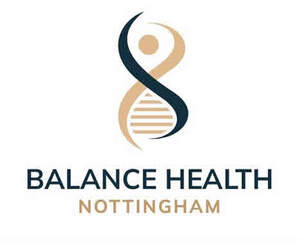

Trade Mark Journal No.2025/048 28 November 2025
UK00004298153 20 November 2025 (41,44)

- Class 41
- Gymnasiums; Providing health club and gymnasium services; Gym activity classes; Gymnasium club services; Provision of gymnasium facilities; Gymnasium services relating to body building; Gymnasium services relating to weight training; Health and fitness club services; Health and fitness training; Health and wellness training; Sports club services; Sports and fitness services; Provision of sporting club facilities; Physical health education; Physical fitness instruction; Exercise and fitness classes; Fitness and exercise instruction; Advice, consultancy and information relating to the foregoing services.
- Class 44
- Medical and healthcare services; Medical and healthcare clinics; Healthcare information services; Healthcare advisory services; Healthcare consultancy services; Medical consultancy services; Medical examination; Medical consultations; Medical counselling; Medical screening; Medical testing services relating to the diagnosis and treatment of disease; Medical care; Medical assistance; Medical diagnostic services; Medical evaluation services; Medical imaging services; Issuing of medical reports; Arranging of medical treatment; Medical health assessment services; Provision of medical facilities; Medical ultrasound imaging services; Remote monitoring of medical data for medical diagnosis and treatment; Psychometric testing for medical purpose; Behavioural analysis for medical purposes; Medical analysis for the diagnosis and treatment of persons; X-ray services; X-ray examinations for medical purposes; Laboratory analysis services relating to the treatment of persons; Medical laboratory services for the analysis of samples taken from patients; Blood testing being medical analysis services for diagnostic and treatment purposes provided by medical laboratories; Medical analysis services for diagnostic and treatment purposes provided by medical laboratories; Hospitals; Hospital services; Nutrition consultancy; Consultancy and information services relating to pharmaceutical products; Consultancy and information services relating to medical products; Advice, consultancy and information relating to the foregoing services.
Balance Health Nottingham Ltd
Representative: Briffa